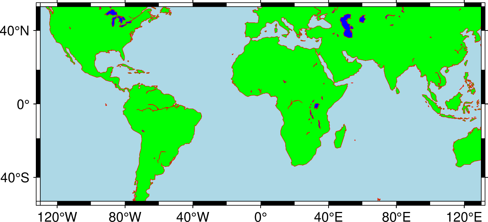

coast绘制海岸线
执行以下脚本： ./coasttest.sh
#!/usr/bin/env bash
# GMT modern mode bash template
# Date: 2019-09-10T00:44:39
# User: seisman
# Purpose: Purpose of this script
export GMT_SESSION_NAME=$$ # Set a unique session name
gmt begin coasttest png,pdf
gmt coast -JM10c -R-130/130/-50/50 -Ba40f20 -W0.1p,red -A2000 -Cblue -Ggreen -Slightblue
#参数解释如下：
#-JM10c 意思是用墨卡托投影画10cm宽度的图
#-Rg-R-130/130/-50/50 意思是画图范围是经度-130到130，纬度-50到50
#-Ba40f20 意思是以40度为标注间隔，20度为刻度间隔，绘制坐标轴
gmt end show
待脚本执行完成后，工作目录中将生成 png 格式的图片文件，双击打开将看到如下图所示的图片。
